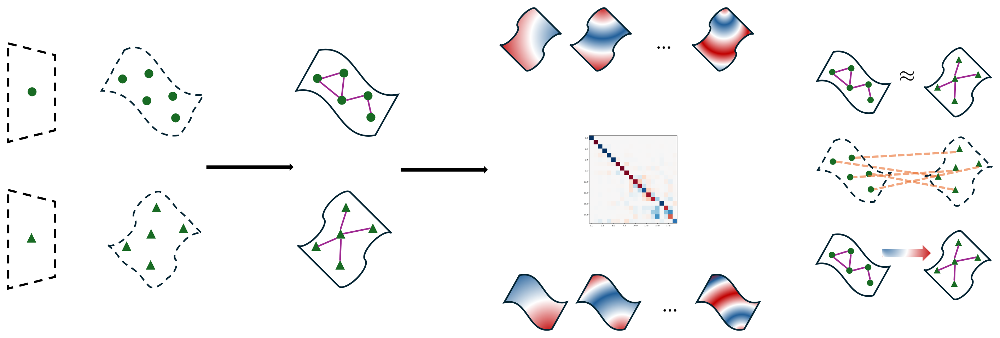
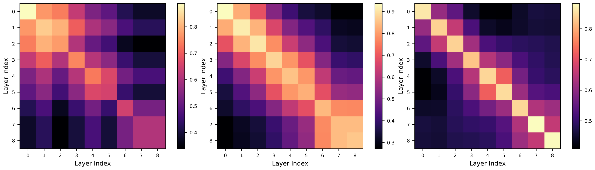
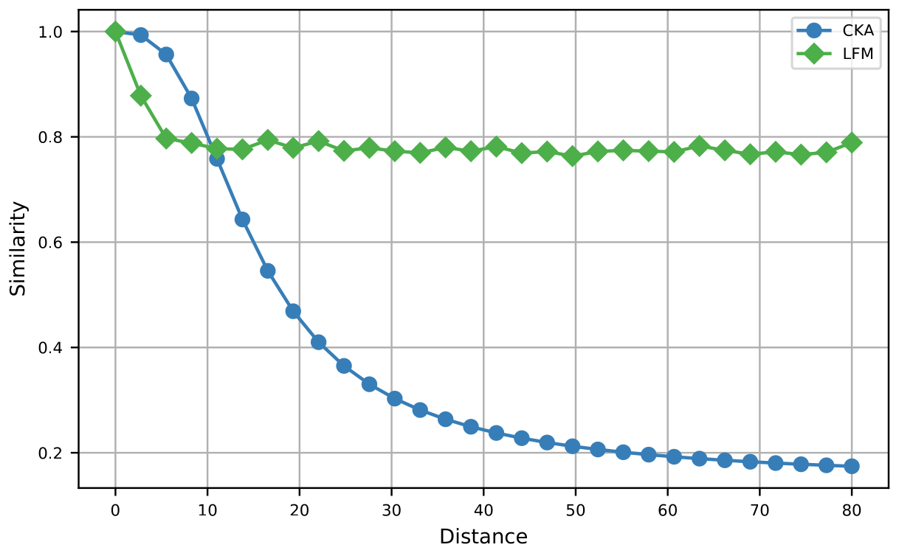

Latent Functional Maps: a spectral framework for representation alignment
Borrowing functional maps from spectral geometry to compare, align, and transfer the latent spaces of neural models
Neural models learn data representations that lie on low-dimensional manifolds, yet relating these representational spaces remains an open problem. Latent Functional Maps (LFM) brings spectral geometry into representation learning by adapting the functional-maps framework: it models each latent space as a graph, works with the eigenbasis of the graph Laplacian, and solves for a compact linear map between the resulting function spaces. The same map yields three capabilities at once — an interpretable similarity measure between spaces, a way to find correspondences in unsupervised and weakly supervised settings, and a route to transfer representations across models. Across similarity analysis, zero-shot stitching, and retrieval, on both vision and text, LFM aligns spaces from very few correspondences and stays robust to perturbations that mislead kernel-based similarity measures.
Overview
Neural networks represent high-dimensional data as elements of much lower-dimensional latent spaces, and a recurring empirical finding is that distinct models — different seeds, architectures, even modalities — tend to develop related representations when exposed to similar data, often relatable through a simple linear transformation (Roeder et al. 2021; Moschella et al. 2023). Modeling that relation is the problem this paper attacks.
Latent Functional Maps (LFM) takes a tool from spectral geometry — functional maps (Ovsjanikov et al. 2012), originally developed for 3D shape correspondence — and brings it to representation learning. Instead of matching points directly, LFM represents each latent space as a manifold approximated by a graph, builds an eigenbasis from that graph, and solves for a compact linear operator that maps functions on one space to functions on the other. A single such operator delivers three things at once: an interpretable similarity measure between spaces, a way to find correspondences between them, and a way to transfer information across them.

From points to functions
The method has three ingredients.
Building the graph. Given samples X = \{x_1, \ldots, x_n\} from a latent space \mathcal{X}, LFM builds a symmetric weighted k-nearest-neighbor graph G = (X, E, \mathbf{W}), where edge weights come from a distance function d — the L_2 metric or angular distance. It then forms the normalized graph Laplacian
\mathcal{L}_G = \mathbf{I} - \mathbf{D}^{-1/2}\,\mathbf{W}\,\mathbf{D}^{-1/2},
with \mathbf{D} the diagonal degree matrix. Because \mathcal{L}_G is positive semi-definite and self-adjoint, it admits an eigendecomposition \mathcal{L}_G = \mathbf{\Phi}_G\,\mathbf{\Lambda}_G\,\mathbf{\Phi}_G^\top; the eigenvectors \mathbf{\Phi}_G = [\phi_1, \ldots, \phi_k] form an orthonormal basis for functions on the graph nodes.
Choosing descriptors. A descriptor is any real-valued function on the graph’s nodes that encodes information shared between the two spaces. The paper distinguishes three regimes: supervised descriptors built from a partial known correspondence (e.g. geodesic distances on the graph to a set of anchor points); weakly supervised descriptors from an equivalence relation such as shared class labels; and unsupervised descriptors that depend only on the graph’s own geometry, such as the Heat Kernel Signature (Sun et al. 2009).
Computing the map. With spectral descriptor coefficients \hat{\mathbf{F}}_G = \mathbf{\Phi}_G^\top \mathbf{F}_G on each side, the latent functional map \mathbf{C} is the solution of
\arg\min_{\mathbf{C}}\; \bigl\lVert \mathbf{C}\,\hat{\mathbf{F}}_{G_X} - \hat{\mathbf{F}}_{G_Y} \bigr\rVert_F^2 \;+\; \alpha\,\rho_{\mathcal{L}}(\mathbf{C}) \;+\; \beta\,\rho_{f}(\mathbf{C}),
where \rho_{\mathcal{L}} and \rho_{f} are commutativity regularizers for the Laplacian and the descriptor operators, akin to Nogneng and Ovsjanikov (2017). The solution is then refined with the ZoomOut spectral-upsampling algorithm (Melzi et al. 2019).
Crucially, the same \mathbf{C} then serves all three downstream uses: it acts as a similarity measure, as a generator of point-to-point correspondences (via nearest neighbors between \mathbf{\Phi}_{G_Y}\mathbf{C} and \mathbf{\Phi}_{G_X}), and as a way to transfer points expressed as distance functions through the functional domain.
A similarity measure with structure
For an isometry between manifolds, the functional map is volume-preserving and hence orthogonal — meaning \mathbf{C}^\top\mathbf{C} is diagonal. LFM turns this into a similarity score by measuring how far \mathbf{C}^\top\mathbf{C} is from diagonal:
\mathrm{sim}(X, Y) \;=\; 1 - \frac{\lVert \mathrm{off}(\mathbf{C}^\top\mathbf{C}) \rVert_F^2}{\lVert \mathbf{C}^\top\mathbf{C} \rVert_F^2}.
The score is also interpretable: the leading eigenvector of \mathbf{C}^\top\mathbf{C} localizes where on the target manifold the map is most distorted.
Following the sanity check of Kornblith et al. (2019), the authors train 10 CNNs on CIFAR-10 (Krizhevsky and Hinton 2009) with different seeds and compare their per-layer representations, then measure how accurately each method matches corresponding layers across models. The LFM-based similarity behaves like CKA but concentrates more tightly on the diagonal, giving a slightly higher matching accuracy.

| Method | Layer-matching accuracy |
|---|---|
| CCA | 41.4% |
| CKA | 99.6% |
| LFM | 99.8% |
The structure also brings robustness. Davari et al. (2022) showed that CKA can be fooled by transformations that preserve linear separability, such as local translations. The authors reproduce this: they train an SVM on CIFAR-10 latents and translate samples orthogonally to the separating hyperplane — a perturbation that is semantically irrelevant for classification. As the perturbation grows, CKA collapses while the LFM similarity stays high; the map’s distortion signal, moreover, localizes precisely on the perturbed class.

Zero-shot stitching
Stitching combines an encoder from one model with a decoder from another without retraining either (Bansal et al. 2021). Unlike the relative-representation approach of Moschella et al. (2023) — which still trains a decoder once to consume relative representations — LFM stitching is fully zero-shot, with no additional training.
The authors take four pre-trained image encoders and stitch their latent spaces to classify with an SVM across five datasets (CIFAR-100 with coarse and fine-grained labels, ImageNet, CUB, MNIST, AG News — spanning images and text). For each encoder they build a graph of 3,000 points with 300 neighbors per node and solve for the map with the first 50 eigenvectors of the Laplacian. They compare a direct orthogonal transformation from anchors (Ortho) (Maiorca et al. 2024) against LFM combined with that orthogonal map (LFM+Ortho), and a variant that uses dataset labels as descriptors and needs no anchors at all (LFM+Ortho (Labels)).
LFM+Ortho consistently outperforms the alternatives, especially when few anchors are available; the direct orthogonal transformation only catches up once more than 50 anchors are used, at which point LFM is limited by the number of eigenvectors rather than by the correspondences. The fine-grained CIFAR-100 task is harder than the coarse one, particularly when aligning self-supervised and supervised vision models (e.g. DINO vs. ViT). Qualitative autoencoder reconstructions on MNIST, FashionMNIST, and CIFAR-10 (using 10, 10, and 50 correspondences respectively) are visibly sharper than both the no-transformation baseline and the orthogonal-only method.
Retrieval across word embeddings
Finally, the framework is tested on cross-space retrieval between two English word-embedding models, FastText (Bojanowski et al. 2017) and Word2Vec (Mikolov et al. 2013). Following Moschella et al. (2023), embeddings of 20K shared-vocabulary words are extracted; 2K random correspondences build the k-NN graphs (neighborhood size 300, first 50 eigenvectors) and the remaining 18K are held out for evaluation, scored by Mean Reciprocal Rank (MRR).
The functional map is strikingly sample-efficient: with just 5 anchors it already reaches an MRR above 0.8, and performance does not improve much beyond that — suggesting 5 anchors suffice for an optimal map between these spaces. Competing methods improve with more anchors but still trail LFM+Ortho, which reaches an MRR of 0.99 at 300 anchors. The paper also reports that MRR rises sharply, to over 0.6, once more than 25 eigenvectors are used.
Takeaways
By casting representation alignment in the functional domain, LFM packs three capabilities — an interpretable and provably metric similarity measure, a correspondence finder that works from few or no anchors, and an explicit transfer mechanism — into a single spectral framework, where prior methods typically addressed only the last of these and only implicitly. The result is a tool that aligns latent spaces across seeds, architectures, and modalities from minimal supervision, while remaining robust to perturbations that destabilize kernel-based similarity. The authors position Latent Functional Maps as a general-purpose instrument for the representation-learning community.
The figures on this page are reproduced from the original paper, released under CC BY 4.0. The similarity-matrix figure is a side-by-side composite of the paper’s three original panels. A copyable BibTeX entry for this page is generated below.
Citation
@inproceedings{fumero2024,
author = {Fumero, Marco and Pegoraro, Marco and Maiorca, Valentino and
Locatello, Francesco and Rodolà, Emanuele},
title = {Latent {Functional} {Maps:} A Spectral Framework for
Representation Alignment},
booktitle = {Advances in Neural Information Processing Systems
(NeurIPS)},
date = {2024-06-20},
url = {https://arxiv.org/abs/2406.14183}
}